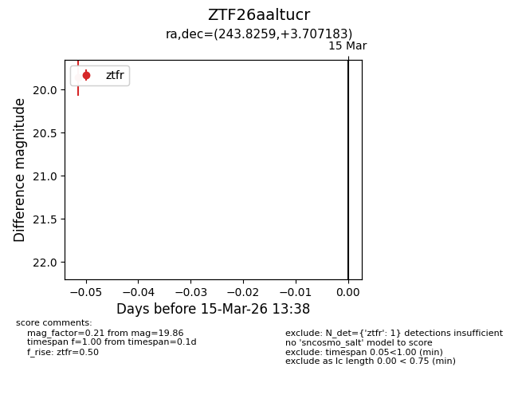
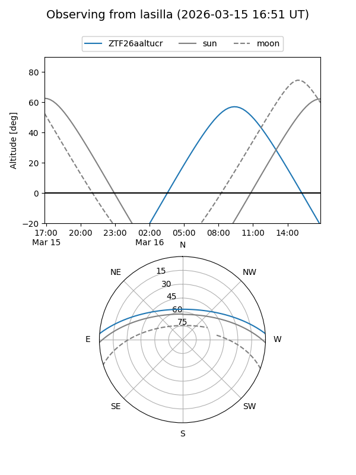
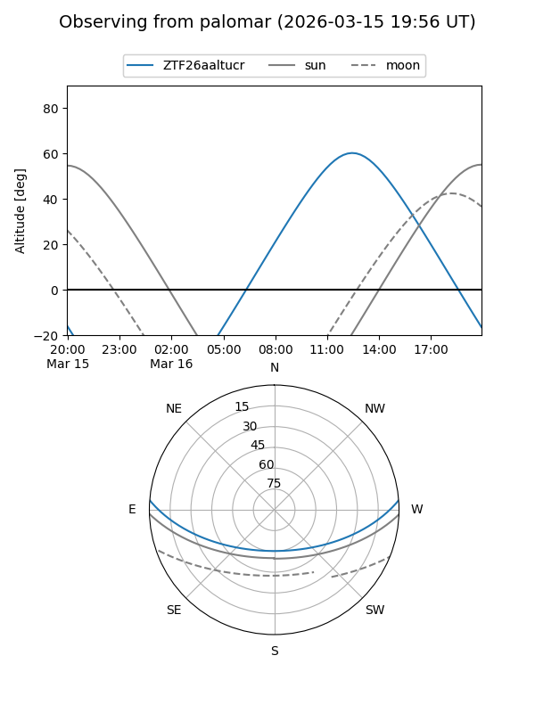

ZTF26aaltucr
Target ZTF26aaltucr at 2026-03-15 13:40
Aliases and brokers:
FINK: link
Lasair: link
ALeRCE: link
alt names
ZTF26aaltucr (ztf,fink_ztf)
Coordinates:
equatorial (ra, dec) = 243.8259,+3.70718
equatorial (HMS+DMS) = 16:15:18.21,+03:42:25.86
galactic (l, b) = (16.4719,+36.07210)
Flags:
Photometry:
last ztfr=19.86
1 ztfr detections
Lightcurve

Visibility


Additional plots